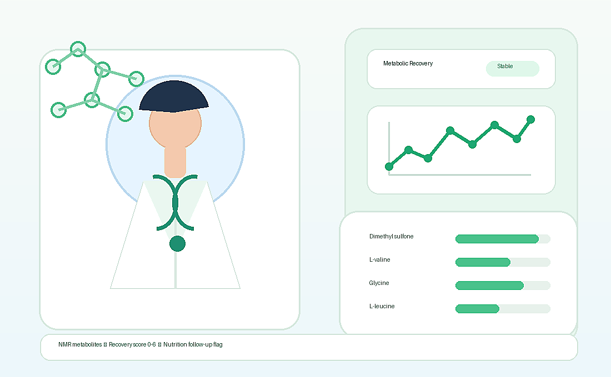

ค้นหา sample หรือ subject_id โดยใช้รหัสที่ไม่ระบุตัวบุคคล
Hospital recovery dashboard
สรุปการฟื้นตัวทางเมตาบอลิซึมหลังผ่าตัดให้ทีมรักษาอ่านได้ในหน้าเดียว
ระบบดึงข้อมูลจริงจาก backend แล้วแสดงผลเป็นภาษาทางคลินิก: ภาวะที่โมเดลทำนาย, ความน่าจะเป็นหลังผ่าตัด, คะแนนฟื้นตัว, biomarker ที่เป็นเหตุผล และธงติดตามโภชนาการ.
อ่านเร็วในคลินิก
เห็นสถานะ, คะแนน, และคำแนะนำติดตามได้ทันที
ช่วยนักโภชนาการ
บอกสารที่เปลี่ยนและเหตุผลของ nutrition follow-up flag

Test ROC-AUC
--
ดู predicted state และ post-op probability จาก NMR metabolites
ตรวจ biomarker ที่ทำให้ sample ดู preop-like หรือ post-op-like
ใช้ recovery score และ nutrition flag เพื่อจัดลำดับการติดตาม
Follow-up coverage
จำนวนตัวอย่างตามช่วงติดตาม
Top-6 biomarkers
สารที่โมเดลใช้ตัดสินใจมากที่สุด
Longitudinal signal
แนวโน้ม median log1p abundance ของสารหลัก
De-identified samples
เลือกตัวอย่างเพื่อตรวจผล
Clinical summary
ยังไม่ได้เลือก sample
เลือก sample เพื่อดูผลจริงจากโมเดล
ภาวะที่โมเดลทำนาย
--
preop / post-op
ความน่าจะเป็น post-op
--
คะแนนฟื้นตัว
-- / 6
preop-like / transition / post-op-like
ธงติดตามโภชนาการ
--
top metabolite reasons
สำหรับทีมรักษา
สรุปที่นำไปใช้ต่อ
เลือก sample เพื่อสร้างสรุปอัตโนมัติ
สารที่เป็นเหตุผลของผลลัพธ์
Manual input
กรอก top-6 metabolite log1p abundance
ใช้ค่า log1p abundance เหมือนข้อมูล clean จาก EDA. สามารถกดใช้ค่าจาก sample ที่เลือกอยู่ได้.
CSV / TSV upload
Upload metabolite profile
ไฟล์ต้องมี column top-6: Dimethyl sulfone, L-valine, isopropanol, lipoproteins, glycine, L-leucine. ระบบจะ predict สูงสุด 20 rows แรก.
Leakage control
Train/test split by subject_id
Confusion matrix
Actual vs prediction
Model architecture
Data pipeline used by the app
Clean EDA data
Create label
Group split
Train scaling
Top-6 features
ExtraTrees
Rule score
Dashboard output
Rule-based recovery score
แปลง metabolite pattern ให้เป็นคะแนนที่อ่านง่าย
Rule นี้ใช้ train median threshold จาก modeling pipeline และใช้เป็น explainability layer ไม่ใช่โมเดลวินิจฉัยโรค.
0-2preop-like
3transition
4-6post-op-like
LLM assistant through backend
ถามคำถามจากข้อมูล sample และผลโมเดล
De-identification
ใช้ sample/patient ID ที่ไม่ระบุตัวบุคคล และไม่แสดงชื่อจริง, HN, วันเกิด หรือข้อมูลติดต่อ.
Secure storage & logs
เก็บ model artifact, prediction logs และ audit logs แยกชั้นข้อมูล เพื่อให้ตรวจสอบย้อนหลังได้.
Access control
จำกัดสิทธิ์เฉพาะทีมแพทย์และนักโภชนาการที่เกี่ยวข้องกับการติดตามผู้ป่วย.
Deployment options
รองรับทั้ง on-premise hospital server และ BDI cloud ตามข้อกำหนดด้านความปลอดภัย.